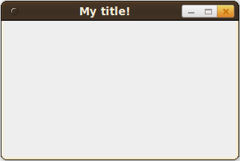
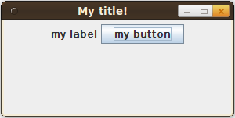

Swing is a Java package for creating graphical user interfaces (GUI). I will give you complete, runnable examples how you could use Swing. All examples are done in test.java
Basic examples
JFrame
The basic class is JFrame:
import javax.swing.JFrame;
public class test {
public static void main(String[] args) {
JFrame frame = new JFrame("My title!");
frame.setVisible(true);
frame.setSize(200, 200);
frame.setDefaultCloseOperation(JFrame.EXIT_ON_CLOSE);
}
}
You will get:
{kind=link}

JPanel
You add your elements to a JPanel:
import javax.swing.JButton;
import javax.swing.JFrame;
import javax.swing.JLabel;
import javax.swing.JPanel;
public class test {
public static void main(String[] args) {
JFrame frame = new JFrame("My title!");
frame.setVisible(true);
frame.setSize(300, 150);
frame.setDefaultCloseOperation(JFrame.EXIT_ON_CLOSE);
JPanel panel = new JPanel();
frame.add(panel);
JLabel label = new JLabel("my label");
panel.add(label);
JButton button = new JButton("my button");
panel.add(button);
}
}
It looks like this:
{kind=link}

Action Listeners
This is the most simple example of an ActionListener. When you click on the button, it creates a new JFrame.
import java.awt.event.ActionEvent;
import java.awt.event.ActionListener;
import javax.swing.JButton;
import javax.swing.JFrame;
import javax.swing.JLabel;
import javax.swing.JPanel;
public class test {
public static void main(String[] args) {
JFrame frame = new JFrame("My title!");
frame.setVisible(true);
frame.setSize(300, 150);
frame.setDefaultCloseOperation(JFrame.EXIT_ON_CLOSE);
JPanel panel = new JPanel();
frame.add(panel);
JLabel label = new JLabel("my label");
panel.add(label);
JButton button = new JButton("my button");
panel.add(button);
button.addActionListener(new MyAction());
}
static class MyAction implements ActionListener {
@Override
public void actionPerformed(ActionEvent e) {
JFrame frame2 = new JFrame("clicked");
frame2.setVisible(true);
frame2.setSize(200,200);
}
}
}
See also
Continue with part II: How to arrange Objects with Swing